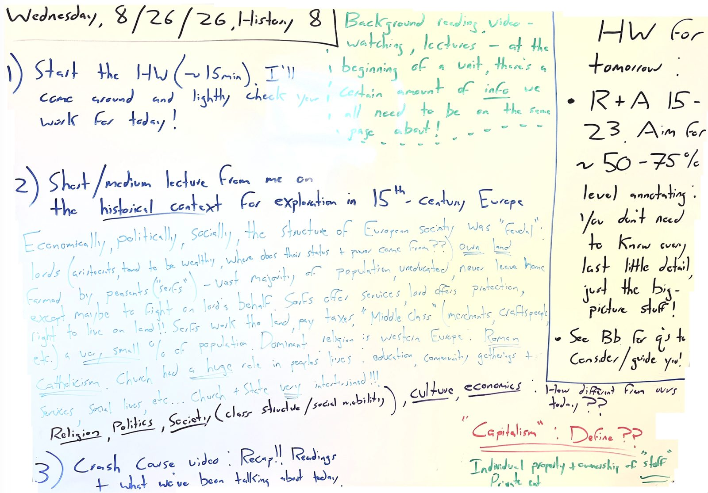

Wednesday, 8/26/26 MOST RECENT CLASS

Summary Of Class
- Opened with ~15 minutes to get going on the R+A'ing, and I came around to lightly check the work from last night.
- Then a lecture from me on the historical context for exploration in 15th-century Europe. We talked about what a "feudal" society actually looked like. Lords owned the land and serfs farmed it. Lords get services (farming, taxes, soldiers) and serfs got protection and a place to live. The "middle class" of merchants and craftspeople was a very small slice of the population. The Roman Catholic Church had an enormous role in daily life, and Church and State were thoroughly intertwined politically and in everyday life!
- We sorted all of that into categories of religion, politics, society, culture, and economics. How is all of that different from our modern world today?
- We also put "capitalism" up as a term to define. Individual property ownership of "stuff," and private enterprise. The 'means of production' owned privately! Worth touching on now because the modern, interconnected, globalized, capitalistic economy we live in today starts to come into being as a result of 15th-century exploration.
- We ran out of time for the Crash Course video, so we'll watch it tomorrow (or soon) instead.
Homework: due Thursday
R+A 15-23. Aim for ~50-75% level annotating. You don't need to know every last little detail, just the big-picture stuff!
See Bb for q's to consider/guide you!
Board As Text
• Background reading, video-watching, lectures – at the beginning of a unit, there's a certain amount of info we all need to be on the same page about!
1) Start the HW (~15min). I'll come around and lightly check your work for today!
2) Short/medium lecture from me on the historical context for exploration in 15th-century Europe
Economically, politically, socially, the structure of European society was "feudal": lords (aristocrats, tend to be wealthy, where does their status + power come from??) own land, farmed by peasants ("serfs") – vast majority of population, uneducated, never leave home except maybe to fight on lord's behalf. Serfs offer services, lord offers protection, right to live on land!! Serfs work the land, pay taxes. "Middle class" (merchants, craftspeople, etc.) a very small % of population. Dominant religion in western Europe: Roman Catholicism. Church had a huge role in peoples' lives: education, community gatherings +... services, social lives, etc... Church + State very intertwined!!!
Religion, Politics, Society (class structure/social mobility), Culture, economics.
• How different from ours today??
• "Capitalism": Define??
• Individual property + ownership of "stuff" / Private ent...
3) Crash Course video: Recap!! Readings + what we've been talking about today.
HW for tomorrow: R+A 15-23. Aim for ~50-75% level annotating. You don't need to know every last little detail, just the big-picture stuff! / See Bb for q's to consider/guide you!